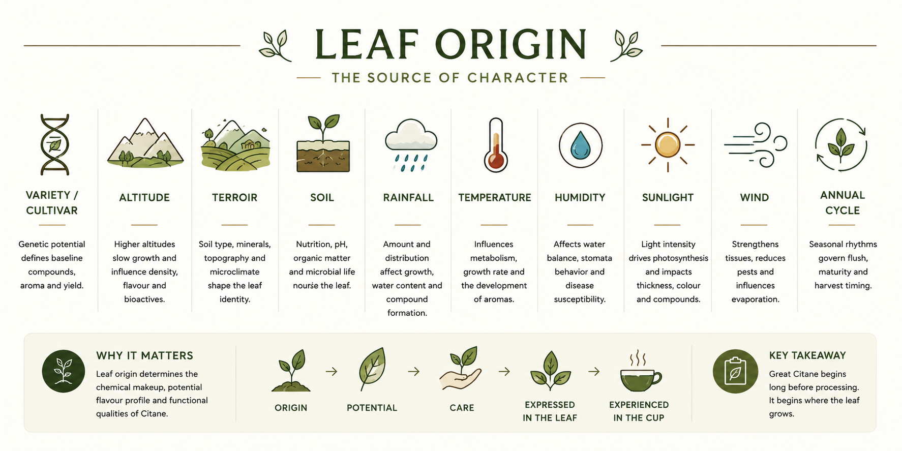

Reference image — Leaf Origin: The Source of Character. Ten factors, from Variety to Annual Cycle.

The genetic identity of the plant. Variety determines the baseline profile of compounds, aroma potential, and yield ceiling. Different coffee varieties produce leaves with measurably different flavour and bioactive profiles. Citane uses Arabica Chandragiri — a variety selected for its performance under Kerala conditions.
See Plant Variety →
The elevation at which the plant grows above sea level. Higher altitudes slow growth, concentrate compounds, and produce denser, more flavourful leaves. Citane grows at approximately 130 metres — a lowland environment — which gives the leaf its particular character: lower astringency, rounder body, shaped by warmth and humidity rather than cool mountain air.

The complete expression of place — soil type, minerals, topography, and microclimate working together to shape the leaf's identity. Terroir is the reason a leaf from Karavaloor is different to a leaf from the same variety grown elsewhere. It is not a romantic concept — it has measurable chemical consequences in the leaf.
See Growing Environment →
The growing medium — its nutrition, pH, organic matter content, and microbial community. Soil feeds the plant through the root system. Healthy soil produces healthy leaves; depleted soil produces compromised ones. Soil health is one of the most direct levers a producer can use to influence leaf quality.
See Plant Care — Soil Health →
The amount and seasonal distribution of rain. Rainfall affects growth rate, water content in the leaf, and the formation of key compounds. Too much rain dilutes; too little stresses. Kerala's distinct wet and dry seasons shape the rhythm of Citane leaf growth and harvest timing directly.
See Seasons — Rainy Season →
Ambient temperature influences metabolism, growth rate, and the development of aromatic compounds. Warmer temperatures accelerate growth and can amplify certain flavour notes. Citane's lowland warmth contributes to its particular aromatic register.

Atmospheric moisture affects the water balance within the leaf, stomatal behaviour, and the plant's susceptibility to disease. Kerala's high ambient humidity is a defining characteristic of the Citane growing environment and influences both leaf structure and post-harvest handling requirements.
See Plant Care — Disease Management →
Light intensity drives photosynthesis and determines leaf thickness, colour, and compound levels. Under rubber shade, Citane receives filtered light — sufficient for healthy growth but moderate enough to produce a softer leaf with lower bitterness than full-sun equivalents. Shade management is an active quality decision.
See Shade Leaf →
Air movement strengthens leaf tissue, reduces pest pressure, and influences the rate of water evaporation from the leaf surface. In sheltered plantation environments such as Thumpassery Estate, wind is naturally moderated by the rubber canopy — a further influence on the leaf's physical character.

The seasonal rhythm of the plant through a full year — governing when flush occurs, when leaves mature, when harvest is optimal, and when the plant rests. The annual cycle is the plant's biological clock. Working with it produces better leaves. Working against it produces stress and decline.
See Seasons & Phenology →The Origin Chain
Leaf origin follows a simple chain: Origin → Potential → Care → Expressed in the Leaf → Experienced in the Cup. No step in processing can create quality that was not first established in the origin. This is why Citane documentation begins here — with the place, the plant, and the conditions — before it ever reaches the processing shed or the brewing vessel.